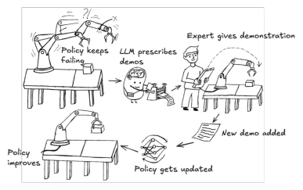
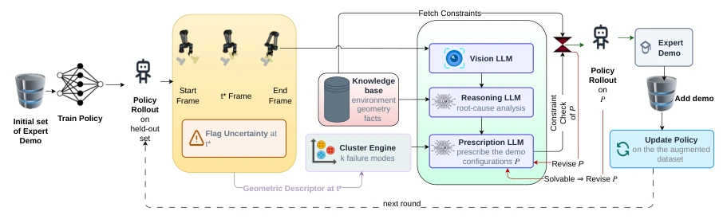
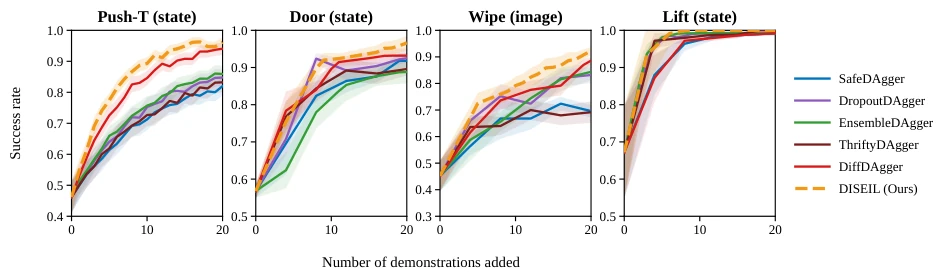
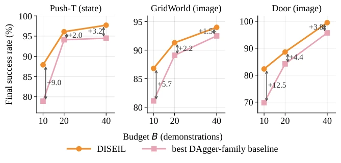
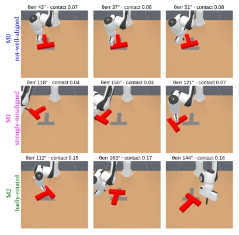
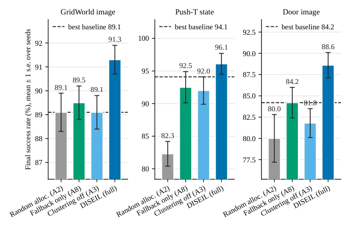
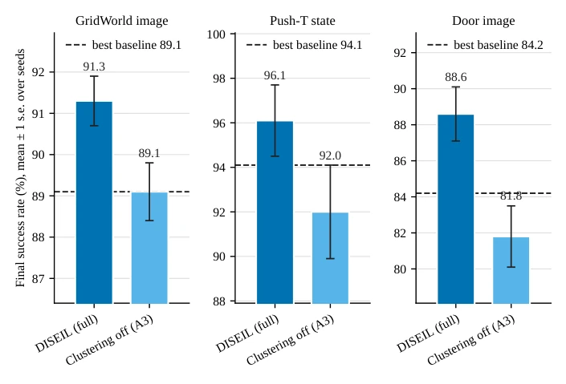
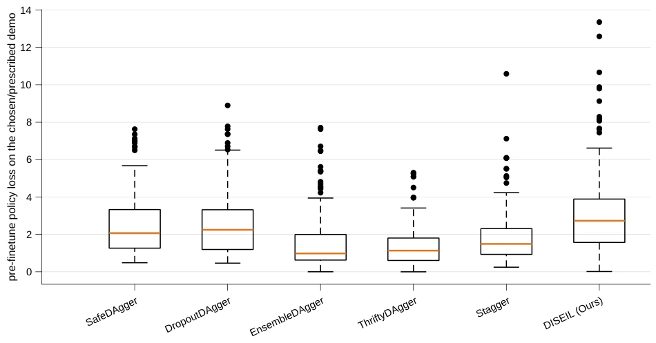
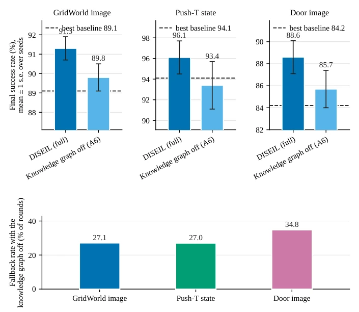
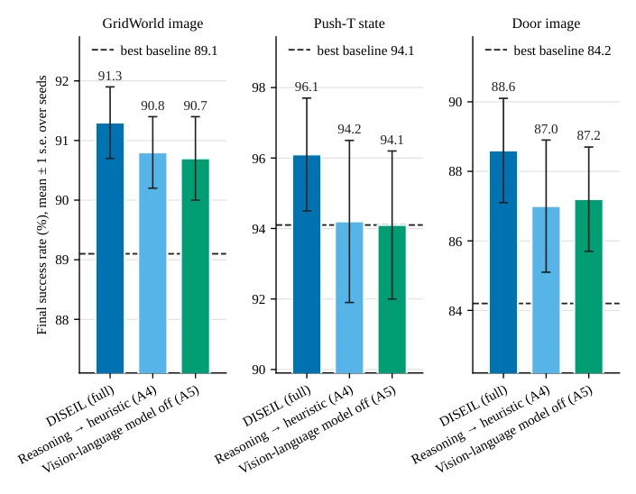

DISEIL 这篇论文给交互式模仿学习（IIL）做了一次“精准打击”式的优化，把“哪里错了”和“怎么补”分得清清楚楚。它最大的亮点在于不再盲目地“哪里跌倒补哪里”，而是先聚类失败模式，再针对性地生成演示请求，这在样本稀缺时确实能显著提效。不过，这方法有点“娇气”：它严重依赖仿真器提供的“上帝视角”几何状态来聚类，一旦上真机，那些 privileged state 没了，聚类还能不能跑通就是个问号。另外，它把专家时间当“计数单位”而非“成本单位”，在人类专家面前可能显得有点“不食人间烟火”。虽然结果在仿真里很能打，但把“几何描述符”和“语言模型”分家处理，虽然稳健，却也暴露了当前多模态模型在空间推理上的短板——还得靠人工设计的几何特征来兜底。
This paper on DISEIL performs a 'precision strike' style optimization on Interactive Imitation Learning (IIL), clearly distinguishing 'where it went wrong' and 'how to fix it'. Its biggest highlight is no longer blindly 'patching where it fell', but first clustering failure modes, then generating demonstration requests targetedly, which indeed significantly improves efficiency when samples are scarce. However, this method is a bit 'delicate': it heavily relies on the 'god's eye view' geometric state provided by the simulator for clustering; once deployed on real hardware, once those privileged states are gone, whether clustering can still run is a question mark. Additionally, it treats expert time as a 'counting unit' rather than a 'cost unit', which might appear a bit 'out of touch with reality' in front of human experts. Although results are very competitive in simulation, separating 'geometric descriptors' and 'language models' for processing, while robust, also exposes the current multimodal models' weakness in spatial reasoning, still relying on manually designed geometric features to serve as a fallback.
The core pain point of Interactive Imitation Learning (IIL) lies in: when the budget (number of expert demonstrations) is limited, how to maximize the value of each demonstration. Existing methods such as DAgger and its variants (e.g., SafeDAgger [23], DropoutDAgger [41], EnsembleDAgger [42]) mainly solve the problem of 'when' to call the expert, i.e., triggering queries through uncertainty or risk signals. However, once triggered, existing work usually defaults to 'going with the flow': directly correcting the specific failure trajectory that triggered the query, and starting the demonstration from the state where the trajectory currently is. This default strategy is not a big problem when budget is sufficient, but extremely inefficient under small budgets. First, it ignores the commonality behind failures, potentially causing experts to repeatedly correct different manifestations of the same root cause (failure mode), while ignoring other concurrent weaknesses. Second, starting demonstration from the 'trigger point' often only teaches the robot 'how to recover from errors', not 'how to avoid errors', because errors have already accumulated at this time. DISEIL attempts to solve these two neglected decisions: which 'failure mode' to correct, and from which 'optimal configuration' the demonstration should start.

Figure 1: Existing methods correct the single failure that triggered the query. DISEIL looks for patterns across failures and asks for a demonstration that starts at a chosen configuration.
DISEIL proposes a 'demonstration distillation' framework, decoupling the demonstration acquisition process into four explicit stages: Perceive, Partition, Prioritize, and Prescribe. The overall process is a closed loop: the policy runs on the test set, records failure trajectories, clusters via geometric descriptors, uses large models to generate requests, obtains expert demonstrations after constraint checking, and finally retrains the policy. The innovations lie in: 1. Perceive stage: not relying on models to judge geometry, but using manually designed low-dimensional geometric descriptors (including object position, yaw angle, time step ratio, end-effector distance, etc.) to mark the 'anchor' (first step with sustained high loss) where failure occurs, while using VLM to generate semantic descriptions. 2. Partition stage: using geometric descriptors for clustering (e.g., hierarchical clustering), reducing failures to a limited number of 'failure modes', rather than isolated trajectories. 3. Prioritize: combining mode frequency, severity (average peak loss), and memory mechanism (avoiding repeated correction of the same mode), dynamically selecting the next mode to be corrected. 4. Prescribe stage: This is the core innovation. Using language models (PM) to generate new demonstration start configurations based on the selected mode (could be a continuation of the original state, or a 'bridging' configuration synthesized across multiple failure trajectories). The generated configuration must pass a symbolic constraint checker (checking reachability, task constraints, whether it has been solved by the policy), ensuring the request is executable and does not waste expert time. This 'neural perception + symbolic planning' hybrid architecture utilizes LLM's reasoning capabilities while avoiding its unreliability in spatial geometry.

Figure 2: A single acquisition round. The query gate marks each failure at t⋆. A geometric descriptor of each failure groups them into modes and picks the target. Neural annotations describe the chosen mode. The constraint store decides whether the resulting request may be sent to the expert.
The authors evaluated under 10 settings (state/image observation) of 5 simulated tasks (GridWorld, Push-T, Lift, Wipe, Door), comparing baselines such as SafeDAgger, DropoutDAgger, EnsembleDAgger, ThriftyDAgger, Diff-DAgger. The main metric is success rate on the retained test set. Results show that DISEIL achieved the highest or tied highest success rate in all 10 settings, and the advantage was most obvious at the minimum budget (B=10) (e.g., leading baselines by 9 percentage points under Push-T state observation). Ablation studies show that removing 'failure mode clustering' and 'mode assignment' strategies had the biggest impact on performance, while removing the language model had a relatively small impact, indicating the core contribution lies in 'assignment logic' rather than 'language generation'. Additionally, the demonstrations acquired by DISEIL were significantly higher in 'information content' (policy loss on demonstrations) than Diff-DAgger, proving the effectiveness of its selection strategy.

Figure 3: Held-out success rate against the number of demonstrations collected, as mean ± standard error over runs with slightly different starting policies. DISEIL separates from the strongest Push-T baselines after about 5 demonstrations and holds the advantage for the rest of the budget.

Figure 4: Final success rate at budgets B ∈{10, 20, 40} on GridWorld with images, Push-T with state observations and Door with images. Labels give DISEIL’s margin over the strongest baseline in that setting. The margin is widest at the smallest budget.

Figure 5: Failure modes discovered on Push-T (image). Each row shows 3 members of a single geometric cluster. Labels are assigned by the naming pipeline from the task-store vocabulary.
其他图片Other Figures

Figure 7: The allocation ladder on the 3 ablation settings. Bars are the mean final success rate over seeds with 1 standard error, for uniform-random allocation over recorded failures (A2), the deterministic nearest-untried fallback rule promoted to the whole method (A8), clustering removed in favor of greedy worst-loss selection (A3), and full DISEIL. The dashed line is the strongest baseline in that setting. Budget B = 20, 1 demonstration per round.

Figure 8: Success rate with clustering removed. Final success rate for full DISEIL and for greedy worst-loss selection (A3) on the 3 ablation settings, with the strongest baseline as a dashed line.

Figure 9: Per-demonstration goodness, the policy’s per-step loss on each newly acquired demonstration measured before retraining on it. The distributional view of the goodness table of Table 2. Diff-DAgger is run on the robot tasks only.

Figure 10: Grounding and feasibility. Top row: final success rate for full DISEIL and with the environmental constraints removed from the prompts (A6), against the strongest baseline. Bars are means over seeds with 1 standard error, including the A6 bar. Bottom row: the share of rounds that fall back to the deterministic rule when the constraints are removed.

Figure 11: The prescription model and the vision-language model. Final success rate for full DISEIL, for the prescription model replaced by the dominant-representative heuristic (A4), and for the vision-language model removed (A5), with 1 standard error over seeds and the strongest baseline as a dashed line.